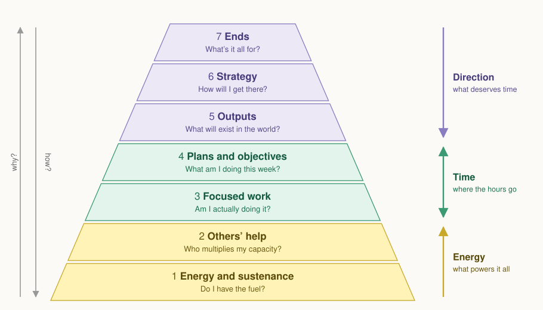
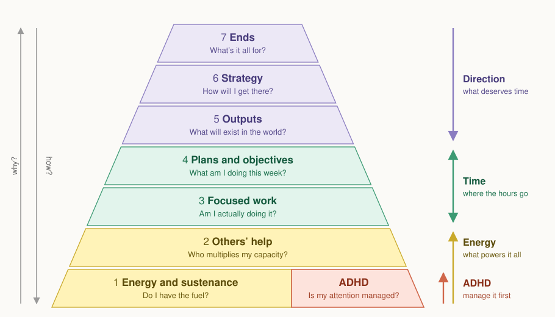

Direction, Time, Energy
Effectiveness works like a stack. Each layer answers “how?” for the one above it and “why?” for the one below. The idea is borrowed from the OSI model in networking, where each layer does one job for the layer above and relies on the layer below.

The seven layers
From the ends down to what makes them possible:
- Ends. What’s it all for?
- Strategy. How will I get there?
- Outputs. What will exist in the world?
- Plans and objectives. What am I doing this week?
- Focused work. Am I actually doing it?
- Others’ help. Who multiplies my capacity?
- Energy and sustenance. Do I have the fuel?
Habits aren’t a layer. They’re the mechanism inside the energy layer, the routines that keep the fuel coming, and they can automate any layer above it.
Three bands
- Direction (ends, strategy, outputs): choosing what deserves time. This is priority, not scheduling.
- Time (plans, focused work): where the hours actually get allocated and spent.
- Energy (others’ help, energy): capacity, mine and what other people add.
Direction flows down from the top. Energy flows up from the bottom. They meet in the middle, in the hours.
Time is fixed: everyone gets the same day. Energy can be renewed and grown, so the bottom is where capacity can actually expand. That’s the old line: manage your energy, not your time.
Direction × time × energy
The result is roughly the product of the three. If any one is zero, the whole thing is zero.
- Energy and time, no direction: busy but lost.
- Direction and energy, no time: overcommitted.
- Direction and time, no energy: burnout.
The ADHD monkey wrench
ADHD is a monkey wrench. It adds attention to the resources: one more thing the bottom layer has to supply. Until it’s managed, the other resources suffer with non-compliance. The habits that keep the fuel coming don’t get done.
So managing ADHD is a core component of the resources layer. For me it’s actually direction, time, energy, ADHD.

More in The ADHD Monkey Wrench and Meeting the Need with ADHD.
Debug from the bottom
Network engineers check the cable before blaming the app. When strategy feels broken (“I don’t know what I’m doing with my life”), check the bottom first. Poor sleep and low energy often look like a strategy problem from the top.
Fixing a lower layer from a higher one is fragile. “I’ll just want it more” is strategy covering for missing habits. It sort of works, and it always breaks.
Where family and fun go
At the top. They’re the ends: the people I love, play for its own sake, being present, learning because it’s interesting. The test for the strategy layer is whether it makes room for them or quietly spends them.
They also need priority. In networking, some traffic is never dropped when the network is busy. Family and fun should be that traffic: on the calendar first, protected under load, not the first thing cut. Burnout usually comes from the opposite, giving them whatever time is left.
Each layer runs on its own clock
Energy changes by the day. Focused work is counted in hours. Plans and outputs move by the week. Others’ help compounds over years, one coffee at a time. Strategy shifts by the quarter, and the ends by the decade.
A bad night shows up tomorrow. A bad strategy can take years to show. So the upper layers need deliberate reviews, matched to their clocks: daily, weekly, quarterly, yearly.
Notes
- On energy over time: Schwartz and McCarthy, “Manage Your Energy, Not Your Time,” Harvard Business Review, October 2007.